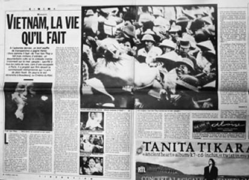
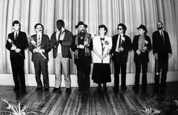
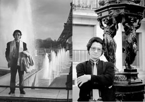

- Không sao, anh yên tâm. Thế anh đang đứng ở đâu? Anh ở ga nào?
☆
- Tôi không biết ga nào cả, tôi chỉ biết là tàu đi từ Tây Ðức sang thôi.
☆
- Anh đứng ở chỗ nào?
☆
- Tôi đang đứng ở trong ga.
☆
- Anh nhìn xem anh đứng ở đường tàu số bao nhiêu?
☆
- Tôi đứng ở đường tàu số 13.
☆
- Anh đứng nguyên ở đấy nhé, đừng đi đâu cả....
☆
Nhiều người nghĩ là phải đến Berlin mới có tàu đi Paris, nhưng không, nhà ga trung tâm nằm ngay cạnh khách sạn Astoria.
Nhà ga Leipzig được coi là một ga lớn ở châu Âu, nhưng thuở đó tối và lạnh như một nhà mồ. Tôi lên tàu đi sang Tây Ðức. Nếu ở lại đêm hôm ấy, chắc chắn tôi sẽ bị bắt.
Trên hành trình từ Lepizig đi Paris, khi tàu vào biên giới Tây Ðức, hải quan biên phòng của Tây Ðức lên kiểm tra giấy tờ. Tôi không có visa vào Tây Ðức! Ðến lúc đó tôi mới biết một chi tiết trong hành trình, đó là đến Frankfurt/M phải rời khỏi tàu và chuyển sang tàu khác. Ðặt chân xuống ga tức là đặt chân vào lãnh thổ của Tây Ðức, phải có visa! “ Bỏ mẹ rồi, kiểu này nó cho tôi xuống ga và giữ tôi lại thì toi luôn, hỏng việc rồi ”.
Người ta hỏi đi hỏi lại bằng tiếng Ðức, tiếng Pháp và cả tiếng Nga, từ đầu đến cuối tôi chỉ nói một câu cụt lủn thế này “ I am a film director – Hanoi - international film Festival Leipzig - Paris ” (tôi là đạo diễn phim - Hà Nội - Liên hoan phim Quốc tế Leipzig - Paris). Tôi cố tình không nói tiếng Nga, chỉ nói đi nói lại như thế. Ðoàn tàu phải dừng nửa tiếng đồng hồ vì trường hợp của tôi.
Mấy người lính biên phòng Tây Ðức hỏi mãi, thấy tôi chỉ nói mỗi câu đó nên chán, không thể nói chuyện được với một thằng mà chỉ nói đi nói lại một câu đến 10 lần! Họ cầm cái hộ chiếu, liệng vào góc tôi ngồi, phẩy tay một cái rồi bỏ đi.
Tôi phờ phạc, cầm cái túi bẹp trong có mấy bộ quần áo và nắm cơm thằng em nắm cho buổi tối hôm trước. Mấy miếng thịt kho, mấy quả dưa chuột không gói riêng, cái nước chua của dưa chuột lại dây sang cơm nắm nên nuốt không được.
☆
Tàu đến Frankfurt/M, hàng quán sáng trưng ánh đèn. Frankfurt/M của Tây Ðức là mảnh đất của một nước Tư bản mà hôm nay tôi đặt chân đến lần đầu. Tôi xuống ga để chuyển sang tàu khác. Chuyển tàu xong thì đi vào biên giới Ðức - Pháp. Tôi mệt quá rồi, cơm thì có mùi như nước gạo không thể nuốt được. Tôi vào toilet để rửa mặt và uống nước cho đỡ háo. Lính biên phòng Pháp tưởng tôi là người chui lủi gì nên cứ đá vào cánh cửa rầm rầm. Tôi bước ra, mặt mũi hốc hác, người ngợm nhếch nhác như vừa chui từ đống rác ra.
Sau đó họ hất hàm hỏi, coi tôi như một người phạm tội vượt biên trái phép. Tôi nói:
- J’étais Tran Van Thuy, réalisateur. Je suis invité ici par le responsable. Attendez moi un peu, je viens là-bas pour prendre mon passport.
(Tôi là Trần Văn Thủy, đạo diễn phim, tôi được mời sang đây. Xin chờ tôi một chút, tôi lại chỗ ngồi của tôi lấy hộ chiếu.)
Xem xong giấy tờ, người lính biên phòng làm một động tác trang trọng kiểu cổ điển, cúi gập người, vung rộng cánh tay thành một đường vòng cung chỉ phía lối ra và nói:
- “S’il vouz plait, monsieur” (Xin mời! Thưa ngài).
Cái tên ga biên giới rất dễ nhớ, đó là ga La Fontaine - Tác giả “Ve sầu kêu ve ve...”
Sau đó tàu đến Paris.
Người ta mời ngày 1 tháng 12 có mặt, mà đêm 28 - 11 tôi đã lò mò sang rồi!
Cái điện thoại công cộng ở Pháp nó phức tạp và nhiều nút hơn điện thoại của xứ ta. Không biết bấm thế nào, trong túi lại không có một xu, tôi nhìn chăm chăm mấy người gọi điện thoại xem họ làm thế nào. Thấy một bà già trông hiền lành phúc hậu, tôi bèn chìa số điện thoại ra nhờ bà gọi giúp. Bà ta đưa cho tôi mấy xu nhưng tôi bảo là tôi không biết gọi, bà ấy quay số và đưa máy cho tôi. Ðầu dây bên kia có giọng phụ nữ nói tiếng Việt:
- Alô...
- Thưa chị, có phải chị ở Hội người Việt Nam tại Pháp không ạ?
- Vâng, có việc gì đấy anh?
Lúc bấy giờ tôi mới cảm ơn bà già, bà ấy đi tôi mới nói:
- Chị ơi, xin chị nói chuyện với tôi một cách thật rõ ràng, nếu chị bỏ máy là tôi đứng đường đấy. Tôi là Trần Văn Thủy, tôi được các anh các chị gửi giấy mời sang đây, nhưng sự có mặt của tôi đáng lẽ là 1/12 mà hôm nay mới là 28/11. Chị có thể giúp tôi liên hệ với anh Trần Hải Hạc, anh Nguyễn Ngọc Giao hoặc anh Bạch Thái Quốc để các anh ấy ra đón tôi được không?
- Không sao, anh yên tâm. Thế anh đang đứng ở đâu? Anh ở ga nào?
- Tôi không biết ga nào cả, tôi chỉ biết là tàu đi từ Tây Ðức sang thôi.
- Anh đứng ở chỗ nào?
- Tôi đang đứng ở trong ga.
- Anh nhìn xem anh đứng ở đường tàu số bao nhiêu?
- Tôi đứng ở đường tàu số 13.
- Anh đứng nguyên ở đấy nhé, đừng đi đâu cả.
Sau này đến Pháp nhiều lần, ở lâu, tôi mới biết cái ga đấy tên là ga De L’Est (Ga Ðông). Ở Paris mà gọi nhau, hẹn hò, đón rước thường phải trước vài ngày; đằng này đang đêm gọi nhau có mặt tức thì là một điều không thể.
Vậy mà chỉ 40 phút sau, anh Trần Hải Hạc chạy ra đúng đường tàu số 13. Anh mặc áo jean, bên trong lót lông trắng, tà áo bay bay theo bước anh chạy!
Câu đầu tiên tôi bảo:
- Anh Hạc ơi, tôi sang sớm có phiền không?
- Không, không, không có phiền gì. Anh sang được là mừng lắm, không có phiền gì đâu.
Trong thời gian dài và nhiều lần qua Pháp, tôi thường ở nhà anh Trần Hải Hạc, Place d’Italie, quận 13.
Qua anh tôi may mắn được biết thêm rất nhiều bạn bè và chúng tôi đã trở nên thân thiết. Ðó là các anh chị có tấm lòng chân thành, gắn bó với quê hương Việt Nam, tha thiết với niềm vui nỗi buồn của đồng bào quê nhà. Tuy vậy, kể về các anh chị ở đây không tiện vì nhiều lí do khác nhau.
...Năm 1946, khi sang Pháp dự hội nghị Fontainebleau, Cụ Hồ đã bế cậu bé Việt kiều một tuổi chụp ảnh. Cậu bé đó là Trần Hải Hạc.
Sau “Tâm Thư” 1989, cái tên Trần Hải Hạc cùng nhiều cái tên khác của Hội người Việt Nam tại Pháp đã được đưa vào sổ đen. Những người này về nước bị công an theo dõi, có những lúc khó về, nếu không nói là cấm nhập cảnh...
Mấy hôm sau Hội người Việt Nam tại Pháp cử chị Thanh Thiện dẫn tôi đi “tân trang”. Cắt một cái séc không biết mấy ngàn quan, mua sắm quần áo trong, quần áo ngoài... thậm chí bắt tôi bỏ giày ra xem tất có rách không.
Oách ra phết.
Ðể làm gì? Ðể Trần Văn Thủy đi nói chuyện, giao lưu với khán giả nhiều nơi ở nước Pháp này.
Khi đó điều tôi sốt ruột đến cồn cào muốn biết tất nhiên là kết quả của Festival International Film Leipzig. Suốt ngày đọc báo, tìm đủ các loại báo đọc, tờ Liberation có bài viết về “Chuyện Tử Tế” và về tôi dài nhất, tác giả bài báo đó là Elizabeth D. Tờ Le Monde Diplomatique với bài của nhà báo nổi tiếng Jacques Decornoy, rồi Le Peuple Du Monde, Le Figaro, Telegrama, Le Gardien... nhiều lắm.
Tôi đọc trên Le Monde Diplomatique rồi Liberation có đăng kết quả của Liên hoan phim Quốc tế Leipzig.

Tờ Libération đưa tin về phim Chuyện Tử Tế
☆
Ôi trời ơi! Có tên phim “Chuyện Tử Tế” trong danh mục phim được giải! Khi đó tôi đang ở phòng trong; anh Trần Hải Hạc đang ngồi ở phòng làm việc, cách một cái bếp.
Tôi hét lên: “ Ha ha ha... Thế là ta được về nước rồi!”
Tôi chỉ chăm chăm nghĩ chuyện làm thế nào về nước mà được yên thân.
☆
Tháng 12-2012, vợ chồng em Dũng về Hà Nội thăm gia đình. Hỏi lại chuyện xưa, em vẫn giữ những tình cảm với ông Cao Nghị và kể chi tiết rằng:
Tối 30-11-1988 tại rạp Capitol diễn ra lễ trao giải và bế mạc Liên hoan phim. Khi Ban Tổ chức xướng tên phim “Chuyện Tử Tế” đoạt giải Bồ Câu Bạc thì khán phòng gần ngàn chỗ vỡ òa. Người ta mời đoàn Việt Nam lên nhận giải.
Dũng bảo anh Cao Nghị:
- Anh lên nhận giải đi kìa!
Ông Cao Nghị giãy nảy:
- Thằng đạo diễn thì nó biến rồi. Anh không lên đâu, anh nhận giải để về nhà chết à!
Nghe Dũng kể đến đây tôi bất giác thấy chua chát: Không biết trong lịch sử điện ảnh thế giới có trường hợp nào, có tác giả, tác phẩm nào tham dự Liên hoan phim đoạt giải mà trải qua những khốn khổ lạ lùng như thế không?
Trong tình thế “chữa cháy” đó, em Dũng đã phải thay mặt đoàn Việt Nam lên nhận giải.
May mà cậu ta cao lớn đẹp trai, ở Ðức lâu rồi nên nói tiếng Ðức thông thạo như người bản xứ.
☆
Cho đến bây giờ, gần ba mươi năm trôi qua tôi vẫn không biết cái giải hình thù thế nào và nó nằm ở đâu.
Ðợt ấy tôi ở Paris đúng ba tháng, cho đến ngày 31-3-1989. Ông Cao Nghị về nhà khốn khổ, làm tường trình, làm kiểm điểm với Bộ Văn hóa, với Công an, người ta quần cho lên bờ xuống ruộng. Bây giờ mỗi lần nghĩ lại tôi vẫn thấy mình chẳng ra gì, có gì đó không phải với ông. Ngoài ra tuyệt nhiên tôi chẳng ân hận về một điều gì khác cả. Vấn đề không nằm ở ông Cao Nghị hay ở tôi mà ở chỗ khác. Ông Nghị khổ, tôi cũng nhiều phen trầy da tróc vẩy và biết bao nhiêu người nữa long đong lận đận vì những chuyện không đâu. Họ có đáng bị như thế không? Cái đất nước khốn khổ này được gì sau hàng loạt những hành xử kiểu như thế? Thôi cứ để cho mọi người phán xét.
...Gần đây tôi có gọi điện thăm ông Cao Nghị. Bây giờ ông sống ở Sài Gòn. Khi tôi nhắc lại chuyện xưa ở Leipzig. Ông chỉ nói: “ Cậu dũng cảm lắm và đã làm được nhiều việc có ích... ”. Về chuyện bị hạch sách, ông nói sơ sơ thôi nhưng ai cũng biết là rất nặng nề.
Trái lại các đồng nghiệp Ðức đối xử rất tốt với tôi. Năm sau, 1989, Liên hoan phim cuối cùng trước khi nhà nước Cộng hòa Dân chủ Ðức sụp đổ, họ đã mời tôi tham gia Ban Giám khảo. Lúc đó tôi đang ở Pháp, tôi không phải xin phép, trình báo ai. Từ Paris tôi bay thẳng sang Berlin rồi Leipzig. Những phim tham gia tranh giải ở Leipzig năm đó rất hay, đặc biệt là bộ phim “Parad” (Cuộc diễu hành) của Ba Lan, tôi đã cho điểm 10 và sau đó quả nhiên phim đoạt giải Bồ Câu Vàng.

Ban Giám khảo Liên hoan phim Leipzig-1989 (Trần Văn Thủy đứng thứ 3 từ phải sang)
Tôi trở lại Paris và Tây Âu cho đến đầu tháng 7-1990. Ðó là thời gian xảy ra những sự kiện hết sức trọng đại trong lịch sử thế giới: Bức tường Berlin sụp đổ; hệ thống Xã hội chủ nghĩa tan rã và Liên bang Xô Viết cũng sụp đổ... Tất nhiên tôi được trực tiếp nhận những thông tin trung thực nhất. Ở một số địa điểm, một số sự kiện, chúng tôi còn ghi hình được và dựng vào bộ phim “Thầy Mù Xem Voi”.

Tôi trở lại Paris và Tây Âu cho đến đầu tháng 7-1990...
☆